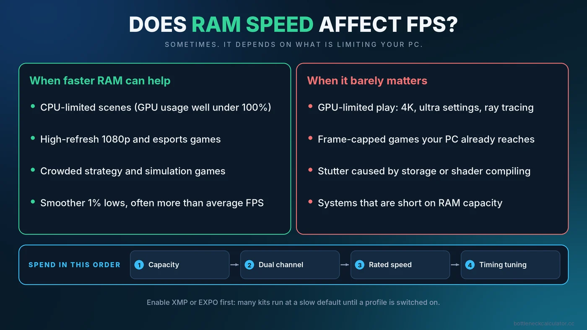
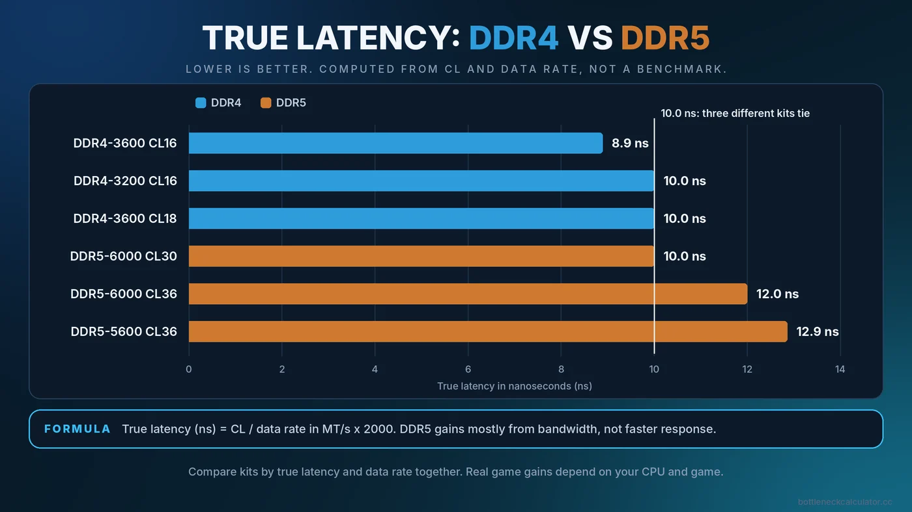

Does RAM Speed Affect FPS? DDR4 vs DDR5, MHz and CL Timings Explained
Memory kits are sold on big numbers like 3600, 6000 and CL30, so it is natural to wonder how much they really change your frame rate. The honest answer is that RAM speed can matter a lot in one situation and almost not at all in another. This guide shows you which situation you are in before you spend money.

Short Answer: Sometimes, and Mostly When Your CPU Is the Limit
Faster memory helps a game only when the processor is waiting on it. In a CPU-limited scene, such as a high-refresh 1080p shooter or a crowded strategy game, the CPU constantly fetches data from RAM, so quicker and lower-latency memory can lift average FPS and especially the 1% lows. In a GPU-limited scene, such as 4K with ultra settings, the graphics card sets the pace and memory speed barely registers.
That makes RAM speed a second-tier upgrade. First make sure you have enough capacity (see is 16GB RAM enough for gaming) and that the sticks run in dual channel. Only then does speed tuning become worth your time.
What "RAM Speed" Actually Means
Three numbers describe most memory kits, and they are often mixed up.
Data rate (MT/s, usually printed as MHz)
A kit labelled DDR5-6000 transfers about 6,000 million times per second. The real clock is half of that, because DDR memory moves data on both edges of the clock signal. Retail boxes and spec sheets still say "MHz", which is why tools like CPU-Z may show a number that looks half as large as the label.
CAS latency (CL)
CL is how many memory clock cycles pass before data starts to arrive. A lower number is quicker, but you can only compare CL values between kits running at the same data rate.
True latency in nanoseconds
To compare different kits fairly, convert to time with this formula: true latency (ns) = CL divided by data rate in MT/s, times 2000. This is simple arithmetic, not a benchmark result.
| Kit | Calculation | True latency |
|---|---|---|
| DDR4-3200 CL16 | 16 / 3200 x 2000 | 10.0 ns |
| DDR4-3600 CL16 | 16 / 3600 x 2000 | 8.9 ns |
| DDR4-3600 CL18 | 18 / 3600 x 2000 | 10.0 ns |
| DDR5-5600 CL36 | 36 / 5600 x 2000 | 12.9 ns |
| DDR5-6000 CL30 | 30 / 6000 x 2000 | 10.0 ns |
| DDR5-6000 CL36 | 36 / 6000 x 2000 | 12.0 ns |
Notice that DDR5-6000 CL30 and DDR4-3200 CL16 have the same true latency. DDR5 mainly gains by moving much more data per second, not by responding faster to each request. That distinction matters for games, which often care about response time as well as bandwidth.
Why Games React to Memory Speed
A game constantly feeds the CPU with small pieces of data: positions of objects, animation state, physics, AI decisions. When that data is not already sitting in the CPU cache, the processor has to wait for RAM. Faster, lower-latency memory shortens that wait. This is why the same RAM upgrade can show a visible gain in one game and nothing in another.
Processors with very large caches tend to be less sensitive to memory speed, because more of the needed data stays on the chip. If you own one of those, the case for expensive RAM is weaker. Treat that as a general tendency rather than a rule, because it varies by game.
Where Memory Speed Barely Matters
- GPU-limited gaming. At 1440p or 4K with demanding settings, the graphics card is the ceiling. Read our guide to the GPU bottleneck to confirm yours.
- Frame-capped play. If you lock the game to 60 FPS and your PC reaches it easily, faster RAM cannot add anything.
- Slow storage or too little capacity. If the system is swapping to disk, the fix is more RAM, not faster RAM.
The Order of Priorities for Gaming Memory
- Enough capacity. 16GB is the practical baseline for current games, and 32GB gives room for background apps.
- Dual channel. Two matched sticks give the CPU twice the memory data width of one stick. This often matters more than a small speed bump. See our dual channel RAM guide.
- Running at the rated speed. Many kits run at a slow default until you switch on a profile. Our walkthrough on how to enable XMP or EXPO covers this step by step.
- Sensible speed and latency for your platform. Pick a well-reviewed kit that your CPU and board support.
- Manual timing tuning. Only for enthusiasts, and only after everything above is done.

DDR4 vs DDR5 for Gaming
DDR4 and DDR5 are not interchangeable. The slot, the motherboard and the CPU platform decide which one you can use, so you rarely choose RAM in isolation. Some Intel boards were sold in both DDR4 and DDR5 versions, while current AMD desktop platforms for Ryzen 7000 and newer use DDR5 only. Check the board and CPU specifications before you shop.
If you are building new on a DDR5 platform, buy a kit in the commonly recommended range for that platform and avoid paying a large premium for the very top speeds. If you already own a DDR4 system, upgrading memory alone will not move you to DDR5, because that would also mean a new board and often a new CPU. For most DDR4 owners, the better value is usually a faster CPU or GPU, chosen with the help of our CPU and GPU pairing guide.
A note on AMD Ryzen
Ryzen chips link the memory controller and the internal fabric, so the best-performing memory speed is often the one where they run in sync. Reviewers regularly point to DDR4-3600 for Ryzen 5000 and DDR5-6000 for recent Ryzen desktop chips as sensible targets. Check AMD's current specifications and your board maker's memory support list for your exact CPU, because guidance changes with new BIOS releases.
How to Test Whether RAM Speed Matters on Your PC
- Confirm your RAM runs at its rated speed. Open Task Manager, go to Performance, then Memory, and read the speed. If it is far below the kit label, you are on the default profile.
- Pick a repeatable scene. Use the built-in benchmark or the same busy area of a game every time.
- Remove the GPU from the equation. Test at 1080p with moderate settings so the graphics card is not at its limit.
- Watch usage. If GPU usage sits near 99%, memory speed will not help. If GPU usage is well below that and one CPU core is busy, memory may be part of the story. Our guide to checking a PC bottleneck explains how to read these numbers.
- Compare 1% lows, not only averages. Memory changes tend to show up in the lows first. See what causes stuttering and weak 1% lows.
Common Misconceptions About RAM Speed
- "Higher MHz always means higher FPS." Not if the GPU is the limit, and not if latency gets worse as speed rises.
- "RGB and fancy heat spreaders improve performance." They do not. Look at the speed, timings, capacity and reviews.
- "Mixing two different kits is fine." It can work, but the system may fall back to the slowest settings or fail to boot at the rated speed. A single matched kit is safer.
- "A memory upgrade fixes any bottleneck." It addresses a narrow set of CPU-side delays. Our guide to the different types of PC bottlenecks shows the other places performance can be lost.
Buying Checklist
- Is the kit DDR4 or DDR5 to match your board?
- Is it a single matched kit of two sticks for dual channel?
- Is it on the board maker's supported memory list, or from a well-reviewed line?
- Is the true latency reasonable for the data rate?
- Will your CPU and BIOS actually run it at the rated speed?
- Are you in a CPU-limited scenario where the gain is likely to show?
Conclusion
RAM speed is a real but narrow lever. It helps most when the CPU is the limit and when memory is running at a slow default. Confirm your current speed, test with a repeatable scene, and spend on capacity and dual channel first. To see whether your CPU or GPU is the more likely limit, run your parts through the free PC Bottleneck Calculator, then verify the result with real monitoring.
Frequently Asked Questions
Is the difference between 3200 and 3600 RAM noticeable?
Usually only in CPU-limited games, and even then it is typically modest. In GPU-limited play you are unlikely to notice. Check true latency as well as speed before deciding.
Is DDR5 worth it for gaming?
It is worth choosing when you are building on a DDR5 platform anyway, because it is the only option there. Swapping a working DDR4 system to DDR5 usually means replacing the motherboard too, which rarely pays off for gaming alone.
Is CL more important than MHz?
Neither alone. What matters is the combination, which you can compare by converting to true latency in nanoseconds, together with the data rate that sets bandwidth.
Does RAM speed affect GPU performance?
Not directly. It affects how quickly the CPU is fed with data, so it can change frame rate only when the CPU is holding the graphics card back.
Can I mix RAM sticks with different speeds?
It often works, but the system will usually run everything at the slowest stick's settings and may not hold the rated profile. A single matched kit is the safer choice.